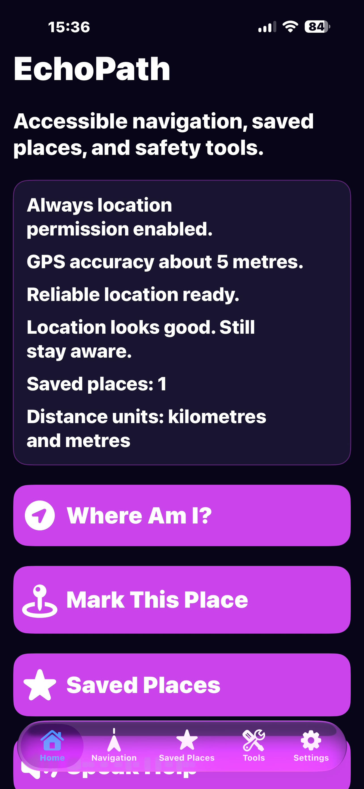

Plan a journey
Search for an address or place, choose an appropriate travel method and select the navigation provider that best fits the trip.
EchoPath
EchoPath is an accessibility-first navigation and environmental awareness app designed for blind and low-vision users. It brings journey planning, spoken guidance, nearby-place awareness, saved destinations, Scene Detection and safety tools together in one place.
The iPhone version is in public TestFlight. Android is in active development. The current target for the first public launch is 15 February 2027.
What EchoPath is built to do
EchoPath is not limited to giving a route from A to B. Its features are being developed around the different questions that can come up before, during and around a journey.
Search for an address or place, choose an appropriate travel method and select the navigation provider that best fits the trip.
Use spoken navigation information, route status, turn information and accessible controls designed to work with VoiceOver and other accessibility settings.
Where Am I can provide the current location together with nearby named places, helping add useful context beyond coordinates alone.
Scene Detection can analyse a photograph for objects, readable text, colours, positions and wider scene context. On supported iPhones, Qwen3-VL Scene AI can inspect the image directly with Apple Vision and RF-DETR available as supporting or fallback systems.
Search This Photo provides a conversational way to ask what is visible, where something appears, what text says, how many objects are present, what colour something is and other image-grounded questions.
Saved Places keeps frequently used or important locations available for quicker access later.
EchoPath includes safety-focused tools such as Emergency Share and Safety Check-In. These are designed to provide additional support, not to replace emergency services, mobility skills or personal judgement.
Navigation on iPhone
The iOS app can present walking, driving, taxi, bus and train options when they make sense for the trip. Navigation choices include EchoPath Guidance, Apple Maps and Google Maps where supported by the selected journey.
Google Places supports destination searching, Google Routes supplies route information and Google Navigation provides in-app turn-by-turn navigation for supported travel modes.
Users can choose Apple Maps when they prefer Apple’s navigation experience.
EchoPath’s own guidance remains available for supported journeys, with spoken and accessible route information designed around the app’s interface.
EchoPath filters travel choices so very short and longer journeys do not always present the same set of transport methods.
iPhone screenshots
All six iPhone screenshots currently supplied for the website are shown below. They represent the beta interface and may change as development continues.



Accessibility
EchoPath is designed around VoiceOver-friendly controls, spoken feedback, clear navigation structure, readable contrast, large tap targets and accessible status information. Accessibility issues are treated as product issues throughout testing.
How EchoPath approaches accessibility →Privacy and on-device processing
EchoPath only asks for permissions needed for its features. Scene Detection includes on-device processing paths, and the website’s Privacy Policy explains how location, photos and third-party mapping services are used.
Two platforms
The iOS version currently contains the broadest EchoPath feature set and is in public beta. The Android project already has working core screens and is being developed as a native Android experience rather than a pixel-for-pixel copy of the iPhone app.
Safety
Navigation and visual interpretation can be incomplete, delayed or inaccurate. EchoPath is intended to provide additional accessible information and should not be relied on as a sole safety, mobility or emergency system.
Read the Terms of Use →